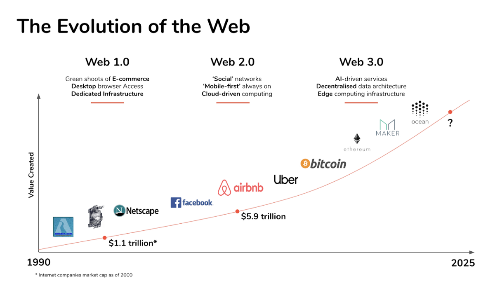
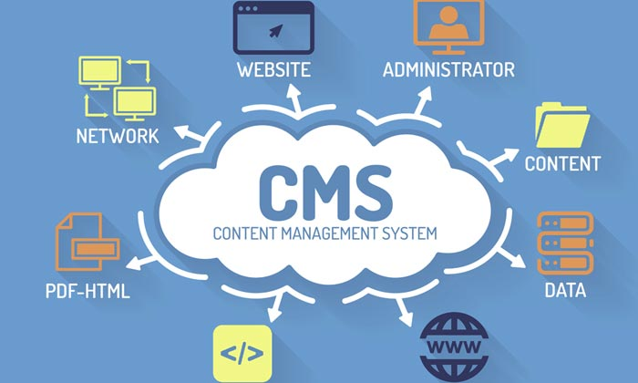
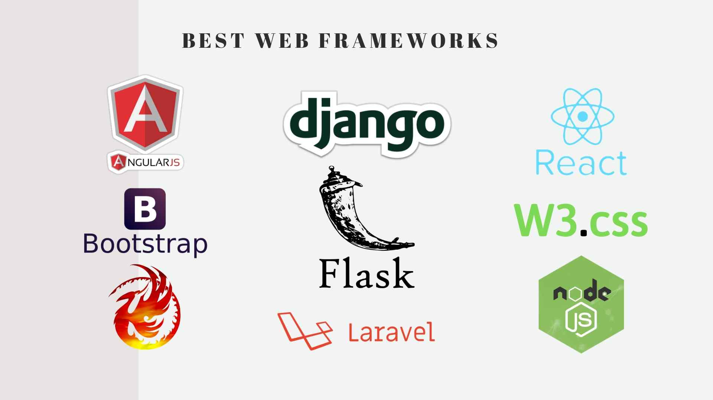
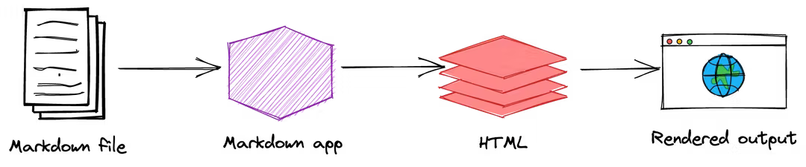

Informática II: Taller 01
Conociendo la Programación Web.
Lic. Diego Medardo Saavedra García Mg. Sc.
31/5/22
Programación Web.

¿Qué es la programación web?
- La programación web según Morales, Andry (2016) se define como la creación de sitios o paginas para internet o para uso en una intranet en caso de empresas, instituciones etc.
Historia
A lo largo de la historia de la web han existido diferentes caracteristicas que permiten conocer las diferentes historias de la Web, a continuación se procede a explicar cada una de ellas:

¿Qué es un CMS?
Un CMS según (Koller, 2022) Un CMS (Content Management System) es un software que permite crear, editar y gestionar el contenido de una página web. De hecho, al traducirlo al español, Sistema Gestor de Contenidos, se deja claro que su principal propósito es permitir una gestión más sencilla de todos los elementos que conforman cualquier sitio web.
¿Qué es un Framework?
Un framework web es (illusion Studio - Desarrollo de software, 2008) Los frameworks web son un conjunto de herramientas, estilos y librerías dispuestas a través de una estructura o esqueleto base, para el desarrollo de aplicaciones web más escalables y sencillas de mantener.
¿Qué son los sitios Web Estáticos?

Según (Open Webinars, 2021) los sitios web estáticos y dinámicos tienen las siguientes Ventajas y Desventajas.
Ventajas de una página web estática.
- El coste inicial de una página web estática puede ser mucho menor que al de una dinámica. Por su naturaleza estática, la complejidad y tiempo de desarrollo es menor porque no requiere del uso de lenguajes de programación o bases de datos.
- Son muy flexibles cuando se trata del diseño. Dado a su naturaleza independiente, cada página puede tener un diseño diferente. No es necesario un solo diseño para múltiples tipos de contenido.
- Los tiempos de carga son muy rápidos. Ya que los sitios web estáticos son construidos previamente. No implica ejecución de scripts o secuencias de comandos complejas, bases de datos ni análisis de contenido a través de lenguajes de plantillas, etc.
- Sin embargo, con la revolución del Jamstack, los generadores de sitios web estáticos como Jekyll, GatsbyJS o Eleventy, y los Headless CMS como Netlify CMS, Siteleaf o Forestry, y además la incorporación de CDN (Content Delivery Network en inglés) para gestionar los recursos multimedia.
Desventajas de una página web estática.
- Una página web estática puede ser más difícil de actualizar. Para usuario no técnicos, una vez la página es creada, hacer pequeños ajustes en el contenido puede representar un desafío a menos que estén familiarizados con HTML, CSS y el código del sitio web en general.
Agregar contenido a la página web o realizar actualizaciones puede incurrir en costos adicionales. Esto puede verse como una consecuencia de la desventaja anterior. Es decir que, con el tiempo, el mantenimiento de un sitio estático puede generar costos de mantenimiento continuo que podrían evitarse si tuvieras una página web dinámica.
Agregar nuevas páginas o funcionalidades a una web estática puede ser más difícil que hacerlo para una web dinámica.
- Ejemplo: Si creas una página web para promocionar productos de tecnología, cada vez que quieras agregar un producto, como un nuevo televisor o un nuevo portátil, tendrías que crear una nueva página específicamente para ese producto, lo que puede llevar mucho tiempo además del costo que puede llevar este proceso.
Markdown
En la La Guía de Markdown es una guía de referencia gratuita y de código abierto que explica cómo utilizar Markdown.
Markdown es un lenguaje de marcado ligero que puede utilizarse para añadir elementos de formato a documentos de texto sin formato. Creado por John Gruber en 2004, Markdown es ahora uno de los lenguajes de marcado más populares del mundo (2022)
¿Cómo utilizar Markdown?
Sintaxis Básica de Markdown.
La guía oficial está disponible de forma gratuita. Guia oficial de Markdown
Sintaxis Básica de Markdown.
Títulos
#Título 1
##Título 2
###Título 3
####Título 4
#####Título 5Renderizado.
#Título 1
##Título 2
###Título 3
####Título 4
#####Título 5
Párrafo
Este es un párrafo.
Y esto es otro párrafo.Renderizado..
Este es un párrafo.
Y esto es otro párrafo.
Líneas horizontales
***
---
___Formato de Texto.
Esto es un **texto en negrita**.
Esto es un texto parcialmente en ne**gri**ta.
Esto es un __texto en negrita__.
Esto es un texto parcialmente en ne__gri__ta.Renderizado.
Esto es un texto en negrita. Esto es un texto parcialmente en negrita.
Esto es un texto en negrita. Esto es un texto parcialmente en ne__gri__ta.
Formato de Cursiva.
Esto es un *texto en cursiva*.
Esto es un texto parcialmente en cu*rsi*va.
Esto es un _texto en cursiva_.
Esto es un texto parcialmente en cu_rsi_va.Renderizado..
Esto es un texto en cursiva. Esto es un texto parcialmente en cursiva.
Esto es un texto en cursiva. Esto es un texto parcialmente en cu_rsi_va.
Formato Negrita cursiva.
Esto es un ***texto en negrita y cursiva***.
Esto es un ___texto en negrita y cursiva___.
Esto es un texto parcialmente en ne***grita y cursi***va.
Esto es un texto parcialmente en ne___grita y cursi___va.Renderizado.
Esto es un texto en negrita y cursiva. Esto es un texto en negrita y cursiva. Esto es un texto parcialmente en negrita y cursiva. Esto es un texto parcialmente en ne_grita y cursi_va.
Código en línea.
Cambia de directorio con el comando `cd`Bloques de código.
let num = 5;
num++;Renderizado.
Bloques de código.
<pre>
<code>
let num = 5;
num++;
</code>
</pre>
let num = 5;
num++;
Enlaces.
Me gusta el editor [Editor Markdown](https://editormarkdown.com)
Enlace a la sección [Encabezados](#encabezados)
<https://editormarkdown.com>
<email@edulazaro.com>Renderizado..
Me gusta el editor Editor Markdown Enlace a la sección Encabezados https://editormarkdown.com email@edulazaro.com
Título del enlace.
Me gusta el editor [Editor Markdown](https://editormarkdown.com "Mejor editor Markdown")
Me gusta el editor <a href="https://editormarkdown.com" title="Mejor editor Markdown">Editor Markdown</a>Renderizado.
Me gusta el editor Editor Markdown
Me gusta el editor Editor Markdown
Formato del enlace.
Enlace al **[Editor en negrita](https://editormarkdown.com)**.
Enlace al *[Editor en cursiva](https://editormarkdown.com)*.
Enlace al ***[Editor en negrita y cursiva](https://editormarkdown.com)***.
Enlace al [`código`](https://neoguias.com).Renderizado.
Enlace al Editor en negrita.
Enlace al Editor en cursiva.
Enlace al Editor en negrita y cursiva.
Enlace al código.
Enlaces a Referencias.
Aprende a [programar con Rust][1]
Aprende a [programar con JavaScript][2]
Aprende a [programar con Python][2]Opcionalmente, también se puede agregar el título de la referencia
[1]: https://neoguias.com/php "Programa con Rust"
[2]: https://neoguias.com/javascript 'Programa con JavaScript'
[3]: <https://neoguias.com/python> (Programa con Python)Imágenes.

<img src="/img/tutorial/imagen-markdown.webp" alt="Imagen de unas nubes">Logo del ISTJM
Imágenes con enlace.
[](/img/tutorial/imagen-markdown.webp)
<a href="/img/tutorial/imagen-markdown.webp">
<img src="/img/tutorial/imagen-markdown.webp" alt="Imagen de unas nubes">
</a>Logo del ISTJM
Citas en Markdown 01.
> Siento dejar este mundo sin probar pipas FacundoRenderizado.
Siento dejar este mundo sin probar pipas Facundo
Citas en Markdown 02.
> Me encanta este tutorial de Markdown,
>
> sin duda es el más completo (Paulo Coelho)Renderizado.
Me encanta este tutorial de Markdown,
sin duda es el más completo (Paulo Coelho)
Citas anidadas.
> Ayer comí hijos
>
>> Y antes de ayer manzanasRenderizado.
Ayer comí hijos
Y antes de ayer manzanas
Citas Compuestas.
> #### Esta es una cita de ejemplo!
>
> - Me he comprado la PS5
> - Y otro ordenador
>
> *Estaré* forever **alone** pero `feliz`Renderizado.
Esta es una cita de ejemplo!
- Me he comprado la PS5
- Y otro ordenador
Estaré forever alone pero
feliz
Listas.
1. Primer elemento
2. Segundo elemento
3. Tercer elementoRenderizado.
- Primer elemento
- Segundo elemento
- Tercer elemento
Listas.
* Primer elemento
* Segundo elemento
* Tercer elementoRenderizado.
- Primer elemento
- Segundo elemento
- Tercer elemento
Anidación de Listas.
1. Primer elemento
2. Segundo elemento
* Segundo elemento
* Segundo elemento
3. Tercer elementoRenderizado.
- Primer elemento
- Segundo elemento
- Segundo elemento
- Segundo elemento
- Tercer elemento
Elementos de las Listas.
* Primer elemento
* Segundo elemento
Un párrafo
* Tercer elementoRenderizado.
Primer elemento
Segundo elemento
Un párrafo
Tercer elemento
Imágenes anidadas.
* Primer elemento
* Segundo elemento

* Tercer elementoRenderizado.
Primer elemento
Segundo elemento
Logo del ISTJM Tercer elemento
Citas anidadas.
* Primer elemento
* Segundo elemento
> Cita
* Tercer elementoRenderizado.
Primer elemento
Segundo elemento
Cita
Tercer elemento
Bloques de código anidados.
* Primer elemento
* Segundo elemento
let num = 5;
num++;
* Tercer elementoRenderizado.
Primer elemento
Segundo elemento
let num = 5; num++;Tercer elemento